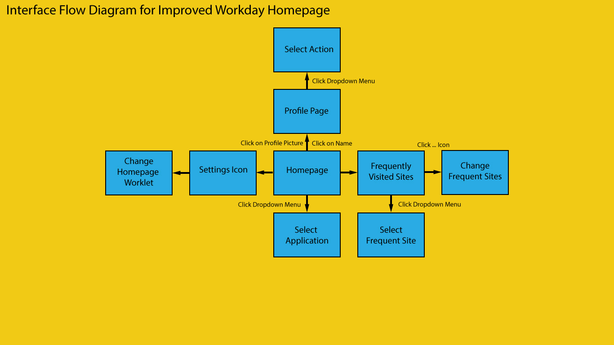
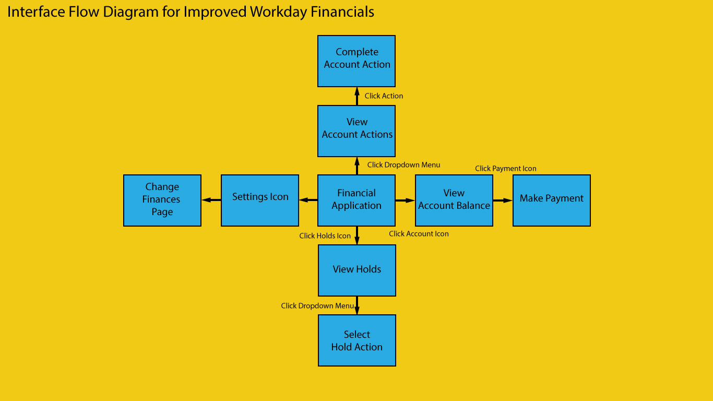
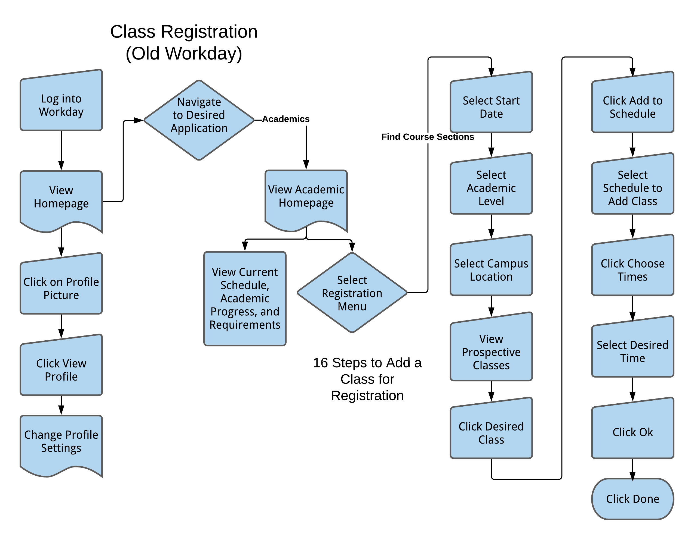
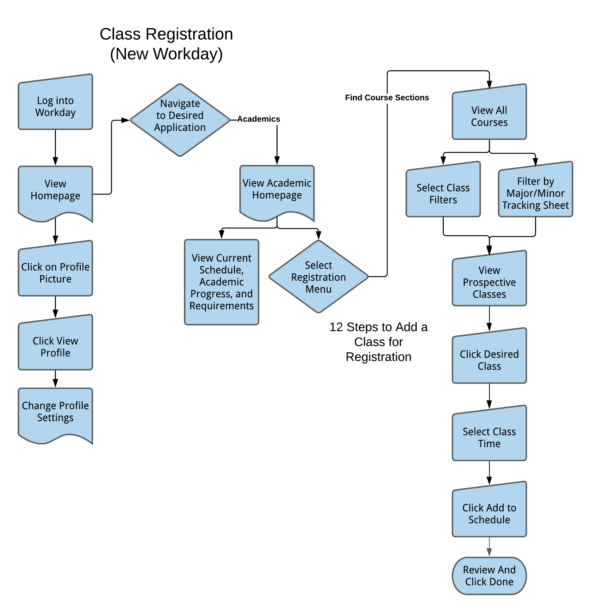

Workday Critique
MyWorkday is a scheduling and financial tool used by WPI students, professors, and administrators. Through the application, students are able to register for classes, view academic progression, pay tuition, and perform other relevant academic and financial tasks. In this sense, Workday serves as an automated mediary between students and administration. WPI began implementing Workday last year, with the purpose to replace the old scheduling and financial software: Banner Web. Thus far, the introduction of Workday has created some frustration for students who have not adjusted to the new user interface. This paper will analyze the current website for ways that Workday could improve their website design and overall user experience. Looking at the website from a perspective of best practices, we see many shortcomings in the website.
Simplicity
The scheduling process in particular is rather unnecessarily complicated in the Workday Academics homepage. In the course search process, the current procedures are rather detailed and may be too overwhelming to the user. The course search popup menu, for example, requires the user to choose from four start date periods, future, current, past, and non-year. For students registering for next semester courses, the plethora of options may not be entirely beneficial, and can even be rather annoying to click through subsections just to get to next semester courses. In total, it takes four clicks just to navigate to the current term. A use case that Workday should consider is the student that already knows which course they want to take. A search bar option would prove useful in that it saves users from having to fill out search conditions. Once the user navigates to the course search menu, there are 13 filter sections for the student to choose from. Some of these sections are repetitive and rather unnecessary and thus add to the complexity of the course search page.
Visual Hierarchy
The visual hierarchy in some instances of the site is misleading, with some less important dashboards being larger than more important sections. In the academics dashboard, we see the “helpful links” banner taking up a large amount of screen space at the top of the screen. Workday should consider moving or shrinking the banner as the placement takes the users’ attention away from the main registration content. Furthermore, the “Actions to Do” section takes up about a quarter of the screen. It is a rather simple dashboard that displays the number of: tasks that a user must complete, holds on their account, and tasks that a user has completed. Because it does not display any significantly important information, it may be beneficial to reduce the size of the dashboard and utilize the space more effectively. On a positive note, the “Financials” homepage within the application is well put together. The information boxes on the top banner of the homepage provide important and relevant payment and insurance notifications. The payment dashboard makes it obvious to the student about their outstanding balances and how much they may owe. The make payment and view statement buttons are placed strategically under the balance owed, which makes it easy for the user to take action when they see their owed balance.One critique that could be made is that the outstanding account balance is displayed in three different sections. However, all of these sections have different purposes: one displaying account balance minus aid, one displaying account activity, and one displaying all outstanding charges. It may be beneficial for Workday to combine aspects of all of these sections into one cohesive section to make the dashboard a little less repetitive.
Navigability
The overall site is relatively navigable. The back buttons are consistently in the top left corner, which makes it easy to navigate to the previous page that you came from. One feature that Workday could add is a frequently visited pages shortcut on the homepage. Additionally, one other critique that we have is that there is no explicit link to click to get to the search course page. Users must first click into the find courses search tool before being able to get to the search courses page. As highlighted above, this can be a tedious process.
Accessibility
The biggest accessibility issue with the Workday site is the fact that function buttons are not immediately obvious. In some cases, users must click one link or button to get to another button. This is seen when trying to remove a course from the favorites list, users must click on a non-labeled, generic “three dot button” to see the option to remove the course from the list. The act of clicking one button just to get to another button seems unnecessary and redundant. User processes could be much more obvious to navigate to. There is no clear area or button to click to begin the registration process. In BannerWeb, there was a “create a schedule button”, which would lead students through a course selection then registration process. Because the registration menu in Workday lacks this main process button, students end up clicking multiple buttons until they figure out where to navigate to. One final annoyance that users may complain about is that users must click into a course page to add it to their schedule. An option to select and add multiple courses from the course search page would save users time from having to click into each individual course page. An additional feature that would help enhance the user experience could be the implementation of major and minor tracking sheets, so that students can easily see what courses they have taken and will need to take. This would help increase confidence in students that they are selecting the correct courses for their major or minor.
User Centricity
In general, MyWorkday feels like a template site masked for WPI scheduling. With many unnecessary features, the site feels like it is not designed for students, but rather employees in a company. Since WPI has its own set of course and registration rules, the site should feel tailored to those rules. One example of unnecessary features is that when clicking into the courses, it gives you the option to download the course info as an excel or PDF. This is a neat feature but I do not see it being very practical in any case when you are just trying to schedule. From a user perspective, the more options that you give, the more complicated the interface becomes. With an already stressful process like course scheduling, the dashboard should be as simple as possible.
Conclusion
All things considered, MyWorkday at WPI leaves a lot on the table in terms of possibilities for enhancing the user experience.Workday should consider taking user feedback to figure out what users actually need. In this manner they will be able to specifically design the site to the students’ needs. With some functional and design adjustments, the application has the potential to provide a seamless and exceptional user experience.
Art and Design Critique
The workday site could have a better User experience by making it more relatable to the WPI students , for example, the concept of similarity. Almost all WPI Sites have a standard red and white design whereas Workday has a Blue design. This leads to the user not understanding at the first glance that the Website is related to WPI due to the Similarity not existing. While they have used different sizes, the sizes have not been used in a way that would help users understand the importance of one part over the second part as the sizes have not been standardized. They have used a standard shape for all the details which would be great for the user to understand what parts are similar. The buttons being in a different shape brings attention to the fact that they are buttons and hence give the users a better experience. They have the boxes with details separated but the colors are not present to separate the contents of the box from one another. This would lead to an issue for the user to differentiate the contents from one another as there is no color differentiation between them to make it easier. While the White space is used effectively for the users to better help understand the different sections of the site, the proximity is slightly jarring from the Design perspective as the things in proximity would be better of related to one another to help users reach the section of the site they want to interact with on the site faster and easier
User Research
To explore our research, suggestions, and analysis, please select a category
Persona 1

Persona 2

Journey map for Alex to register for courses
Needs

Journey map for Alex to register for courses with proposed changes

Journey map for Melissa to track academic progress
Journey map for Melissa to track academic progress with proposed changes
Empathy map for Alex to register for courses

Empathy map for Melissa to track academic progress

Homepage

Course Search Page

Schedule Creation Page

Financial options Page

General Visuals

Homepage
- The process to do anything is too long
- Its not that simplified
- Poor layout
- Workday feels like it was designed by someone who has never used a website before
- It sucks
- nothing is straight forward
- GUI is slow
- Lack of accessibility and unintuitive menus
- TOO MANY USELESS BUTTONS
- It tries so hard to be fluid but it just isnt its very choppy and goes against the golden rule of UX design that everything should be one click away from the home screen
Course Search Page
- Just find it hard to change search parameters.
- Some of the classes listed from the search aren’t actually available.
- I have to select a term, cannot select multiple
- Annoying to go back a page
- It makes no sense it is a financial app that happens to search courses
- You have to choose a term before searching classes (rather than seeing all terms it is avaliable, even for just two terms)
- shows every section and so many clicks
- There are SO many buttons to get to what you want
- Courses are hard to find and register
- cant see all the sections neatly
- it doesn't actually iterate through any of the desired features of the site
Schedule Creation Page
- it's kinda slow and isn't really that easy to use
- They combine both terms onto one calendar
- Why does it let me display my schedule as a pie chart. WHAT!?
- It?? Makes?? No?? Sense??
- It sucks
- its too complicated
- Everything requires way too many steps and things aren't well labeled
- Cant even use the calendar or calendar mixes terms together
- The process is not efficient, grouped courses are not indicated at all
- it is nothing compared to the planner we used to have. having dropdowns as selections for classes is horrible design
- The way the schedule looks - just a list is not the best way to represent it
Financial options Page
- The whole process is confusing and complicated, which makes people worry about if payments go through and what charges are made
- Confusing statements
- It makes no sense
- It sucks
- Half of it students don't use and none of it makes sense
- Data inconsistent and incorrect
- Confusing layout
- Again, good design is simple design. Things should be 1 click from the homepage. having popup and redirections just isnt good design
General Visuals
- Very generic.
- Not intuitive
- Terms should be seperate when viewing calendars
- It sucks
- its too confusing
- Too many steps
- Too much white space
- everything is a dropdown and it looks super choppy. Just very poor design
Improved Homepage Flow Diagram
Improved Financials Flow Diagram
Old Class Registration Process
Improved Class Registration Process
Elements of Reading Experience
This study looked at measuring perceived usefulness, perceived ease of use, attitude, and behavioral intention. The study was designed in three phases: First was a user study, second was a user scenario while a prototype interface was tested and modified to develop an improved version of the interface, and the third phase consisted of empirical tests comparing the original version with the improved interactive interface.
Conclusions
The users’ past UX must never be neglected when such a multi-purpose interactive interface is developed for complex reading activities.
To enhance acceptance of UX for users, designers as well as system developers who are concerned with diversified and interactive technological products should have an in-depth understanding of UX. Also, guided by the contemporary trend of life, they should introduce as much technology as possible to users' daily life, instead of forcing users to adapt to rigid technology.
The line between in-depth reading and shallow reading cannot be drawn by this study.
This study also only looked at the Apple iPad when using iBooks but the comparison can be useful for the behavioral experiences of general users for any reading material.
Citation: Huang, Kuo-Liang, Kuo-Hsiang Chen, and Chun-Heng Ho. “Enhancement of Reading Experience: Users’ Behavior Patterns and the Interactive Interface Design of Tablet Readers.” Library hi tech 32.3 (2014): 509–528. Web.
Application of User Behavior Research Method in Vehicle Navigation Design
This study aimed to improve the vehicle navigation interface use experience through user behavior and emotional response. Understanding the behavioral response can allow the user to better accept the navigation information in the vehicle. The research will highlight not only the importance of users behavior and experience in interface design, but also the necessity of taking effective measures to cater to users' emotional needs.
Conclusions
User behavior research can enable information interaction projects to build upon and transcend designers’ expertise and expectations during vehicle navigation interface design.
The user behavior method is a system and strategic approach involving spatial cognition and spatial behavior planning.
The concept in the analysis is designed to improve the perceived efficiency, reduce the difficulty of understanding and enhance the ability to predict the performance of the principle, the detail design based on three kinds of mental models for the specific design principles, the completion of the organization and visualization of information design issues
The designer needs the information task of the application to create an effective system, that focus is to enhance the understanding of information.
Positive feedback should be given to the users’ task status and operation.
The interface design emphasis is on enhancing the user's assessment of behavior and helping the user form a good cognitive and behavioral plan.
Citation: Wang, Xingyu. “Application of User Behavior Research Method in the Vehicle Navigation Interface Design.” IOP conference series. Earth and environmental science 252.5 (2019): 52071–. Web.
User Experience with Web Browsing on Small Screens
This study set out to understand the effects of mobile-page and homepage designs on small-screen devices. Two experimental studies were conducted to examine how users evaluated interface designs. The researchers developed two guidelines for mobile news websites: the single-page design is favored over the multi-page. In addition, a homepage with a thumbnail design fascilitates information processing better than the progressive and list-view designs.
Conclusions
The homepage design is crucial because it determines how quickly information can be located. A user-friendly homepage usually contains a vast amount of information with a clear organization for different news sections.
First, among the three types of interface designs we examined, the single-page and multi-page designs were rated as easier to read than the zooming design.
In other words, enhanced interactivity can significantly increase users’ intentions to browse a mobile website. Therefore, interactivity should be taken into consideration when designing mobile web interfaces in order to attract new users or retain existing ones.
The major findings in both of our studies are that “simpler is better.
They may also prefer less information at first and having the choice to view information step by step.
Citation: Yu, Nan, and Jun Kong. “User Experience with Web Browsing on Small Screens: Experimental Investigations of Mobile-Page Interface Design and Homepage Design for News Websites.” Information sciences 330 (2016): 427–443. Web.
The Study of Visual Elements Design Based on User Experience in Web Design
This study analyses the users use habits on a website from the perspective of the user's experience. It explores the principles of usage of visual elements in web design based on the user experience.
Conclusions
Three principles of visual elements in web design
Contrast Principle consists of size contrast, brightness contrast, comparison of horizontal and vertical lines, and texture.
Coordination principle consists of main and subordinate, dynamic and static, and out of and into. The dynamic part includes dynamic picture and process of things, static part refers to the button on the interface or text.
Fun principles consist of use of the image, intuitive, vivid graphics optimized interface. It also is the ratio between the title and the text is the rate of change.
Citation: “The Study of Visual Elements Design Based on User Experience in Web Design.” Computational Intelligence in Industrial Application. CRC Press, 2015. 199–202. Web.
The UX Five-Second Rules
This study establishes a set of guidelines designed to assist those who wish to use the five-second method to test their designs. The guidelines address the viability of the method for specific types of research inquries, as well as how to properly design, structure, and execute different test formats.
Conclusions
The five second test is used when trying to assess immediate feelings associated when a user sees the content. It should never be the only method used to assess a design.
- Don’t use a five-second test when a different research method will produce better results for you.
- Focus on the specific design aspect(s) you want to test and employ the appropriate test format.
- Don’t give participants any excuse to say “I don’t know” or “I don’t remember”.
- Devote time to crafting proper instructions.
- Optimize the test image so that scrolling is eliminated.
- There is no “magic number” for how many questions to ask, but fewer is usually better.
- Order the questions optimally.
- Pay careful attention to how the questions are worded.
- Ask the “most prominent element” question with discretion.
- Open-ended feedback requests carry a high risk of nonresponses and low-information answers.
The main purposes of a home or landing page are generally universal: (a) to give users high-level information about a site and (b) to provide a means of getting to the more specific content areas within the site.
Use images that do not force the viewer to scroll, yet provide the visual information necessary for participants to answer test questions meaningfully.
n such cases, asking the “most prominent” question most likely serves to confirm an explicit design decision, rather than to uncover something that is not already known or suspected.
Citation: Doncaster, Paul. The UX Five-Second Rules : Guidelines for User Experience Design’s Simplest Testing Technique . 1st edition. Waltham, Massachusetts: Morgan Kaufmann, 2014. Print.
Investigating the Affective Quality of Motion in User Interfaces to Improve User Experience
This study focus on motion in user interfaces as a design element which can contribute to an improved user experience of digital media entertainment. The researchers studied affective qualities which are the features of an artifact that can influence emotion.
Conclusions
When designing for better experiences, it has become important to provide a holistic experience with consideration to emotion.
From the above results and statistical analyses, we were able to verify that the motion element has a significant influence on the seven affective qualities of user interface that were tested.
The seven affective qualities tested were Refreshing, Calm, Luxurious, Powerful, Youthful, Uniqueness, and Futuristic.
Citation:Park, Doyun, and Ji-Hyun Lee. “Investigating the Affective Quality of Motion in User Interfaces to Improve User Experience.” Entertainment Computing - ICEC 2010. Vol. 6243. Berlin, Heidelberg: Springer Berlin Heidelberg, 2010. 67–78. Web.
Accesibility
The following are my professional Experiences
City head
Viacom18,India
- Led a team of 120 students from several fields for different college events and successfully sponsored them for mutual gain as a campus ambassador
- Provided brands insights and recommendations on which college festivals to sponsor
- Analyzed the performances of the different ambassadors by rating them based on their tasks to identify scope for improvement.
Founding Member
Elitehubs,India
- Performed a detailed study to analyze current gaming trends on group of 40,000 gamers on Facebook
- Partnered with the top gaming teams in India to manage and organise gaming tournaments.
- Analyzed the need of the market based on the market trends and helped manage the stock to the client demands.
Social Media Manager
Grapevine India
- Led 40 interns from India in teams of photography, content writing and journalism
- Created marketing content based on user feedback and market research
- Fostered social media presence on apps like Twitter, Instagram,LinkedIn and Facebook
- Organized digital events with footfall as high as 1000 for various clients
- Assisted in managing and organizing the social media presence of Viacom18,Yuvaa and a variety of restaurant chains during events
Wireframing
The following are my professional Experiences
City head
Viacom18,India
- Led a team of 120 students from several fields for different college events and successfully sponsored them for mutual gain as a campus ambassador
- Provided brands insights and recommendations on which college festivals to sponsor
- Analyzed the performances of the different ambassadors by rating them based on their tasks to identify scope for improvement.
Founding Member
Elitehubs,India
- Performed a detailed study to analyze current gaming trends on group of 40,000 gamers on Facebook
- Partnered with the top gaming teams in India to manage and organise gaming tournaments.
- Analyzed the need of the market based on the market trends and helped manage the stock to the client demands.
Social Media Manager
Grapevine India
- Led 40 interns from India in teams of photography, content writing and journalism
- Created marketing content based on user feedback and market research
- Fostered social media presence on apps like Twitter, Instagram,LinkedIn and Facebook
- Organized digital events with footfall as high as 1000 for various clients
- Assisted in managing and organizing the social media presence of Viacom18,Yuvaa and a variety of restaurant chains during events
Interaction Design Theory
Completed
- Policy and Strategy for IT
- Information security management
- Data mining business applications
- Digital Marketing
Currently undertaking Courses
- UX designing
- Teaming and organization for innovation
- Business Intelligence
Additional Courses ongoing
- repsonsive web designing on Freecodecamp
- AWS certified Solutions Architect on Udemy
- Python 3 course on Udemy
- SQL masterclass,SQl for data analytics on Udemy
Web and Mobile
The following are my professional Experiences
City head
Viacom18,India
- Led a team of 120 students from several fields for different college events and successfully sponsored them for mutual gain as a campus ambassador
- Provided brands insights and recommendations on which college festivals to sponsor
- Analyzed the performances of the different ambassadors by rating them based on their tasks to identify scope for improvement.
Founding Member
Elitehubs,India
- Performed a detailed study to analyze current gaming trends on group of 40,000 gamers on Facebook
- Partnered with the top gaming teams in India to manage and organise gaming tournaments.
- Analyzed the need of the market based on the market trends and helped manage the stock to the client demands.
Social Media Manager
Grapevine India
- Led 40 interns from India in teams of photography, content writing and journalism
- Created marketing content based on user feedback and market research
- Fostered social media presence on apps like Twitter, Instagram,LinkedIn and Facebook
- Organized digital events with footfall as high as 1000 for various clients
- Assisted in managing and organizing the social media presence of Viacom18,Yuvaa and a variety of restaurant chains during events